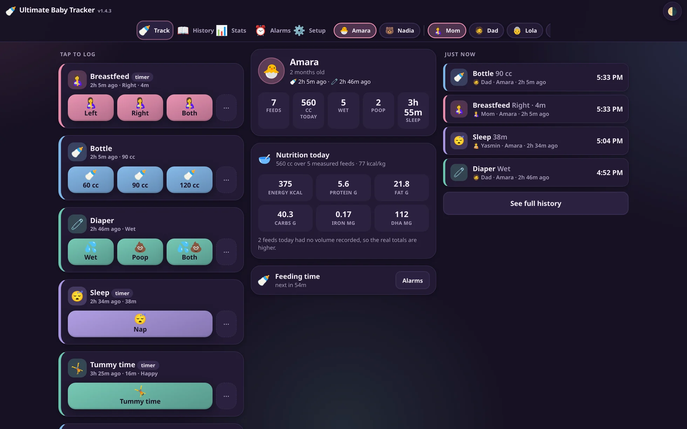
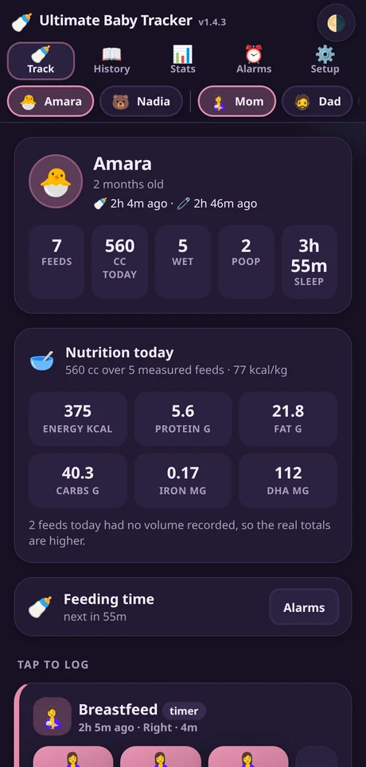
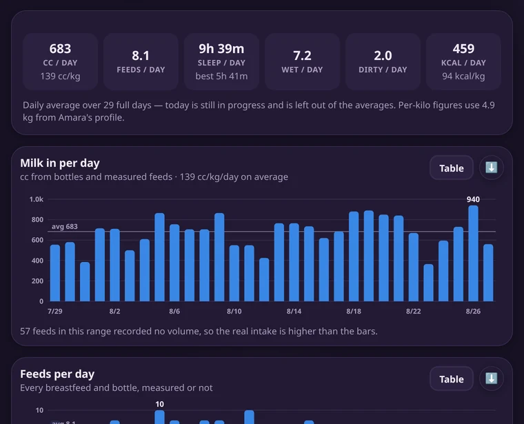
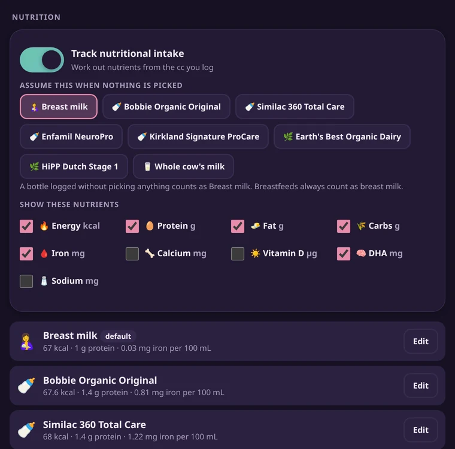

Runs on your own machine
Feeds, nappies, sleep, medicine and anything else you invent — logged with one thumb by whoever is holding the baby, and added up into the numbers a pediatrician actually asks for.
No accounts. No cloud. No subscription.
Source-available under the PolyForm Strict License, free for noncommercial use — your entries stay on your machine as plain text you can read.
github.com/fqazzazee/ultimate-baby-tracker
LINUX · MACOS · WINDOWS — SERVICE INSTALL, NO ADMIN RIGHTS



